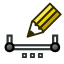

Reinforcement Workbench/it

Introduzione
L'ambiente Rinforzi è un ambiente di lavoro esterno che fornisce strumenti per la generazione e la creazione di armature. Questo ambiente fornisce un'interfaccia e preimpostazioni per la creazione dei tipi comuni di barre d'armatura, e strumenti per generare distinte base per barre d'armatura, distinte di taglio per forme d'armatura, programma di piegatura delle barre e disegno e quotatura delle barre d'armatura.


Installazione
L'ambiente Reinforcement non è incluso nel pacchetto predefinito di FreeCAD, ma può essere facilmente installato tramite  Addon Manager. Si installa da Strumenti → Addon Manager → Reinforcement. Il codice dell'Ambiente Reinforcement è ospitato e sviluppato su github e può anche essere installato manualmente copiandolo nella directory MOD di FreeCAD.
Addon Manager. Si installa da Strumenti → Addon Manager → Reinforcement. Il codice dell'Ambiente Reinforcement è ospitato e sviluppato su github e può anche essere installato manualmente copiandolo nella directory MOD di FreeCAD.
Strumenti
Generazione di rinforzi
 Armatura: Crea un'armatura personalizzata in un elementro strutturale selezionato utilizzando uno schizzo
Armatura: Crea un'armatura personalizzata in un elementro strutturale selezionato utilizzando uno schizzo
- Armatura diritta: Crea una barra d'armatura diritta in un elemento strutturale selezionato
{kind=link}
- Armatura ad U: Crea una barra d'armatura a U in un elemento strutturale selezionato
{kind=link}
- Armatura a forma di L: Crea una barra d'armatura a forma di L in un elemento strutturale selezionato
{kind=link}
- Stirrup Rebar: Crea una staffa d'armatura in un elemento strutturale selezionato
{kind=link}
- Armatura sagomata: Crea una barra d'armatura sagomata in un elemento strutturale selezionato
{kind=link}
- Armatura elicoidale: Crea una barra d'armatura elicoidale in un elemento strutturale selezionato
{kind=link}
 Armatura di pilastro: Crea barre d'armatura per un pilastro rettangolare in un elemento strutturale selezionato
Armatura di pilastro: Crea barre d'armatura per un pilastro rettangolare in un elemento strutturale selezionato
 Armatura di trave: Crea barre d'armatura di una trave in un elemento strutturale selezionato
Armatura di trave: Crea barre d'armatura di una trave in un elemento strutturale selezionato
 Armatura di soletta: Crea barre d'armatura di una soletta in un elemento strutturale selezionato
Armatura di soletta: Crea barre d'armatura di una soletta in un elemento strutturale selezionato
 Armatura di fondamenta: Crea barre d'armatura di fondamenta in un elemento strutturale selezionato
Armatura di fondamenta: Crea barre d'armatura di fondamenta in un elemento strutturale selezionato
Dettagli dei rinforzi
- Distinta dei ferri: Crea la distinta delle barre d'armatura.
{kind=link}
- Sagomatura dei ferri: Crea una distinta dela sagomatura delle barre d'armatura.
{kind=link}
 Distinta e sagomatura dei ferri: Crea una distinta dei ferri e il disegno della sagomatura delle barre d'armatura.
Distinta e sagomatura dei ferri: Crea una distinta dei ferri e il disegno della sagomatura delle barre d'armatura.
- Disegna e quota un'armatura: Crea il disegno e il dimensionamento delle barre d'armatura.
- Disegna un'armatura: Crea il disegno delle barre d'armatura

Quota un'armatura: Crea il dimensionamento delle barre d'armatura in Disegna un'armatura
{kind=link}
{kind=link}
{kind=link}
- Getting started
- Installation: Download, Windows, Linux, Mac, Additional components, Docker, AppImage, Ubuntu Snap
- Basics: About FreeCAD, Interface, Mouse navigation, Selection methods, Object name, Preferences, Workbenches, Document structure, Properties, Help FreeCAD, Donate
- Help: Tutorials, Video tutorials
- Workbenches: Std Base, Assembly, BIM, CAM, Draft, FEM, Inspection, Material, Mesh, OpenSCAD, Part, PartDesign, Points, Reverse Engineering, Robot, Sketcher, Spreadsheet, Surface, TechDraw, Test Framework
- Hubs: User hub, Power users hub, Developer hub